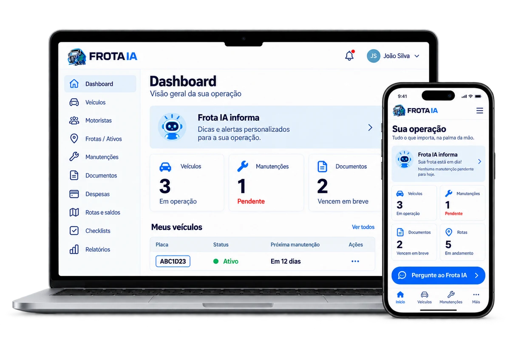

Mande um áudio
Explique o que precisa, sem parar para digitar.
Para quem dirige e para quem gerencia.
Do seu caminhão à sua frota: custos, documentos e manutenção organizados.
Envie texto, áudio, foto ou documento.
Teste grátisDemonstração de frete, rota e custo.
Converse com o Frota IA e analise um frete.
Defina o plano ideal para sua operação.
Comece a organizar veículos, documentos e rotas.
Use o WhatsApp do seu jeito e tenha as informações que importam, quando você precisa.
Explique o que precisa, sem parar para digitar.
O Frota IA lê as informações para ajudar na sua rotina.
Encontre oportunidades compatíveis nos grupos autorizados do WhatsApp.
Depende da configuração e autorização dos grupos. Não garante contratação de fretes.Ative um resumo do setor no seu WhatsApp.
Fontes de consulta. Sem vínculo institucional.
Sua operação também na tela.
Organize seus veículos, documentos, manutenções, despesas e muito mais.

Planos para o seu momento
Escolha o plano ideal para sua operação e tenha mais controle no seu dia a dia.
R$ 89,90/mês
Fretes, custos, rotas e manutenção. Radar de Fretes, alertas, documentos e lembretes. Suporte humano no WhatsApp.
ou R$899,00/ano no Pix (12x R$74,92 no cartão)
R$ 149,90/mês
Tudo do Individual. Motoristas, despesas, manutenção, checklists, alertas e relatórios. Dashboard + Google Agenda.
ou R$1.499,00/ano no Pix (12x R$124,92 no cartão)
R$ 249,90/mês
Tudo do Essencial para até 10 veículos. Checklists, alertas e relatórios. Dashboard + Google Agenda.
ou R$2.499,00/ano no Pix (12x R$208,25 no cartão)
Demonstração de frete, rota e custo antes de assinar.
Preço personalizado, implantação assistida e atendimento comercial dedicado.
Dúvidas frequentes
Não. Você começa direto pelo WhatsApp, sem instalar nada.
A demonstração permite conhecer frete, rota e custo antes de assinar. As ferramentas de gestão são disponibilizadas conforme o plano contratado.
O WhatsApp é o canal principal. Nos planos Essencial e Pro, você também acompanha a operação pelo painel web, no computador e no celular. O Individual não inclui o painel.
Serve para os dois: motorista autônomo e empresas com mais de um veículo.
Sim, dentro dos tipos suportados — CRLV, CNH, tacógrafo e outros.
Sim. Ele analisa receita, custo e margem antes de você aceitar, com base nas informações fornecidas.
Nos planos mensais (Individual, Essencial ou Pro), você pode cancelar a renovação quando quiser. Nos planos anuais, o acesso é contratado por 12 meses.
Demonstração de frete, rota e custo.